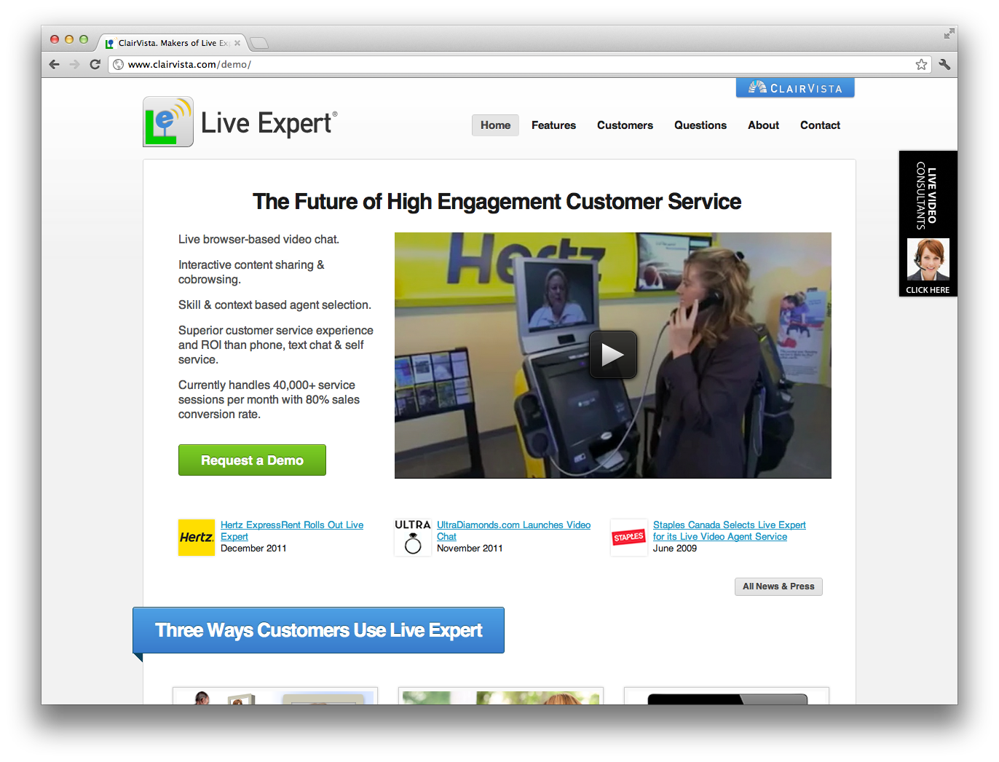
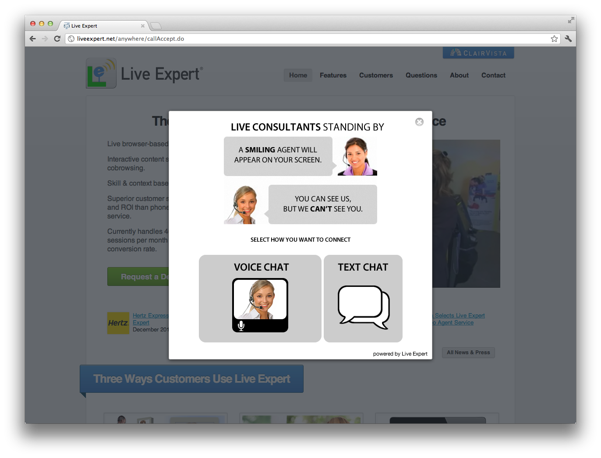
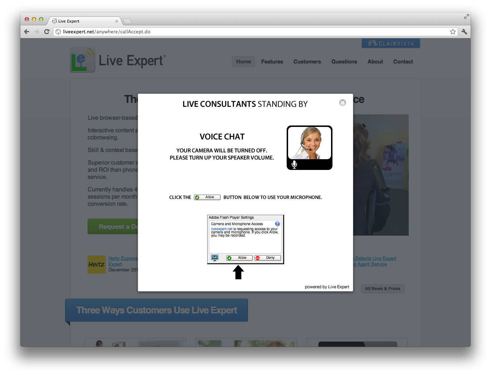

Live Expert Anywhere UI Configuration¶
How to Use This Guide¶
The following pages show each of the user interface states in the LE Anywhere application.
Where images are used to create the UI, a file name is provided. The corresponding file can be found in an associated archive containing these sample assets. Some message configuration is done in text rather than images and those are indicated as such.
Live Expert Widget¶
Implementation Options¶
When using the Live Expert Widget, there are two implementation options:
Flash movie that is played once and paused on the last frame.
File: /widget/movies/le-widget-tab-movie-2.swf
Image
File: /widget/imagesle-widget-tab-movie-flash-alternative.png
Alternatively, you may use the Direct Access API referenced in the Developer Guide.
Call Setup¶
The call setup process can involve allowing a selection between the type of interaction a user wishes to have, or specified directly in your implementation.
Call Setup Dialog 1 - Call Type Options¶

Title: “LIVE CONSULTANTS STANDING BY”
File: /app/images/setup-all-background.png
Movie: “A SMILING AGENT...”
File: /app/movies/setup-main.swf
Instructions: “SELECT HOW YOU WANT TO CONNECT”
File: /app/images/setup-main-msg.png
Voice Chat
File: /app/images/setup-main-btn-callType2.png
Text Chat
File: /app/images/setup-main-btn-callType4.png